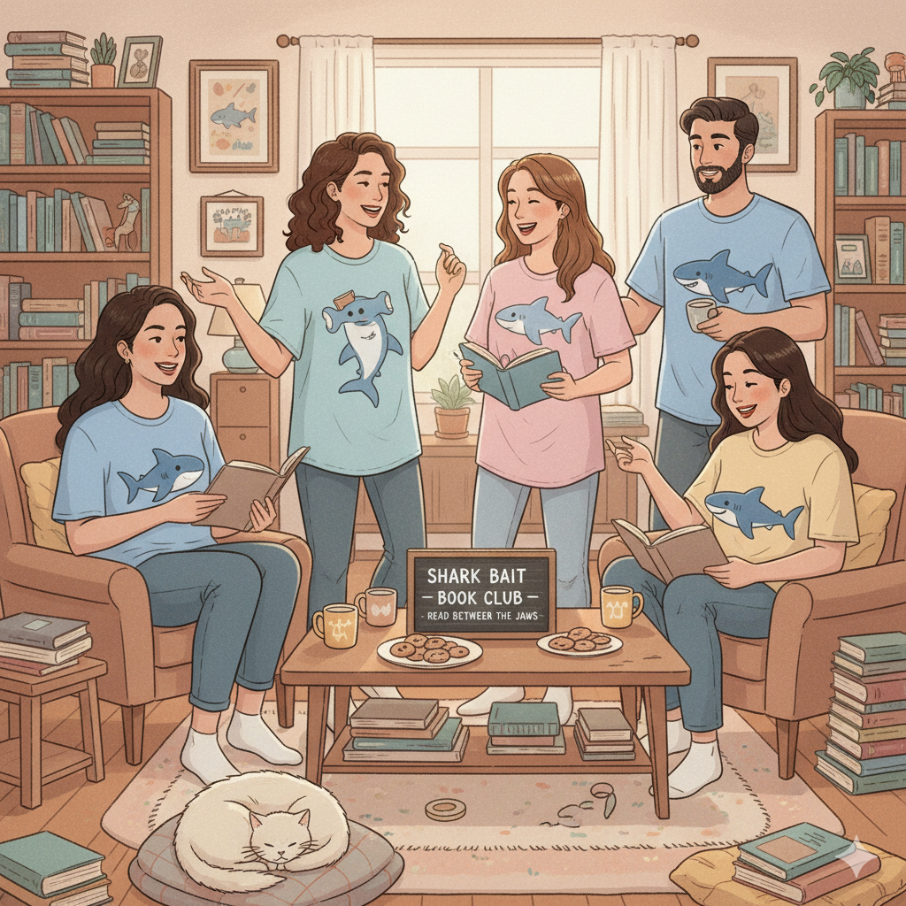
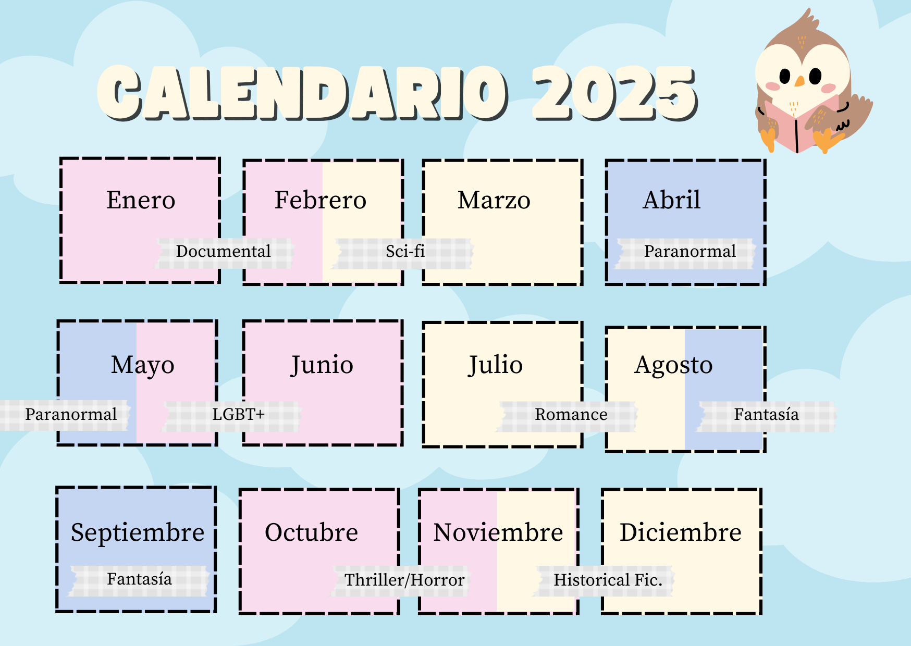
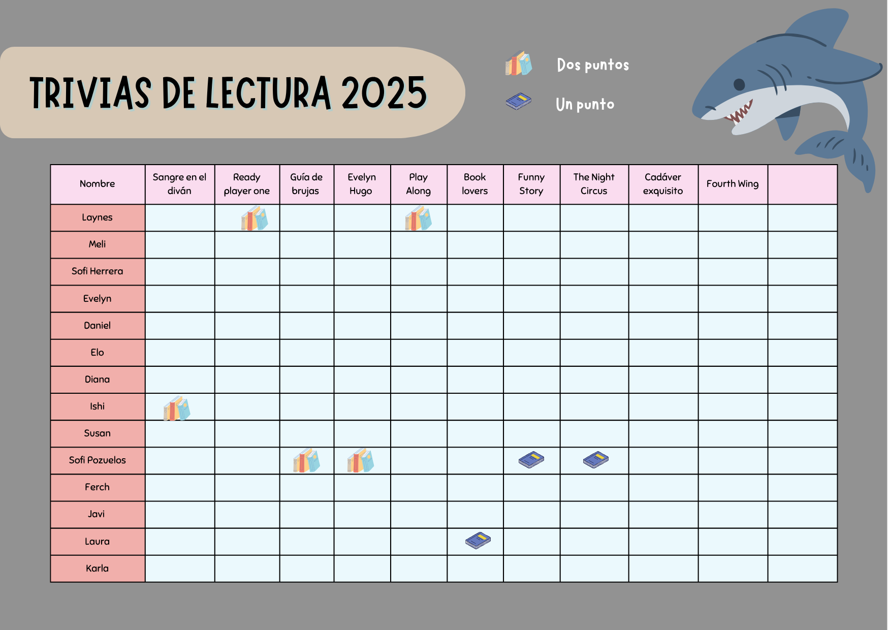

Go back to the home page
Book Club: Spoilers e historias: AKA Las Karens Lastra

This book club was originally named "Spoilers e historias" (Spoilers and stories), but after we read "Book Lovers"
by Emily Henry, we fangirled so badly that we had to change the name. Also, because of that book we
somewhat decided that the Book club logo would be a shark. Those were just things that made sense at the time,
and it kind of stayed that way.
Members:
We currently have 12 members, male and female of different ages ranging from 20 to 35, all from different backgrounds,
education and sexual identities/orientations.
Meetings:
All the meetings were made online, every other Thursday, via Google Meet. We have three meetings per book, so we read
33% of the book for each of the scheduled meetings, and during the gathering, we discuss what we think about the book,
things that caught our attention, and if we are overall enjoying it. In addition, during the last meeting, when we discuss
the ending of the book, we do a quick trivia, and the person who wins, gets a point. The point of it is to read most of
the books, because by the end of the year, the person who accummulates more points will get a gift card for Q200 worth of
books.
How we pick the books:
We wanted to read diverse books about different topics, so we divided the months in categories, and every time we finish
a book, we make a poll where everyone gets to suggest a book, and then we all vote for the one that we are the most
interested in.

The categories we chose were the following:
- Crime/documentary (January/February)
- Sci-Fi (February/March)
- Paranormal (April/May)
- LGBTQ+ (May/June)
- Romance (July/August)
- Fantasy (August/September)
- Horror (October/November)
- Historical Fiction (November/December)
Official vs Unofficial books
While I am proudly explaining how the book selection process was supposed to work, the truth is
that we did not always like the book, so we gave the members the option to not read the "official" book, but
to read another book instead. Those "extra" books that some members read while the others were focused on
the actual book of the month, were called "unofficial books".
Since we were doing the trivias for the official books, we thought that it would only be fair to also
do a trivia for the unofficial books, but that instead of getting "two points" those books would be worth
"one point".
This is what the tracker looked like by the end of the year:

The final meeting is scheduled for November 29, so we'll find the winner there!